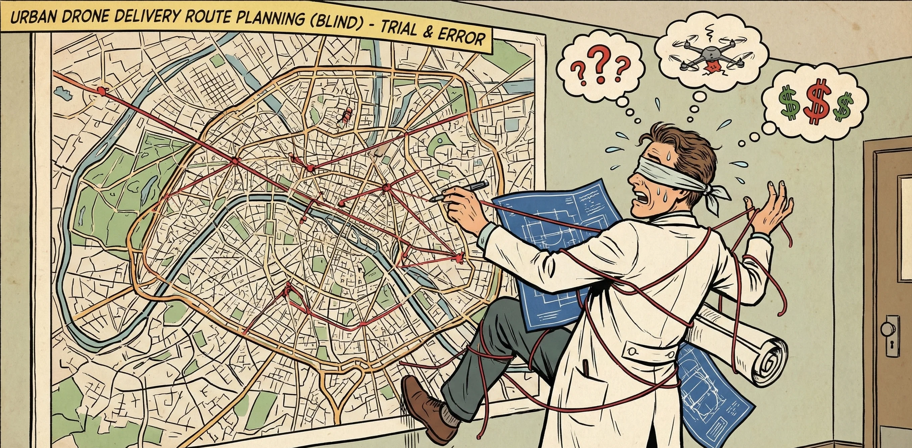

The Blind Planning Cost
- Blind Infrastructure Investment Companies are blindly investing heavily in drones, landing pads, and smart lockers
- Inefficient Methodologies The traditional "fly first, collect data later" approach is fundamentally too slow and too expensive.